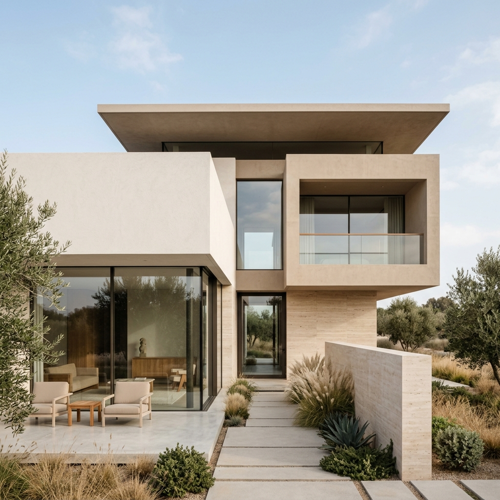
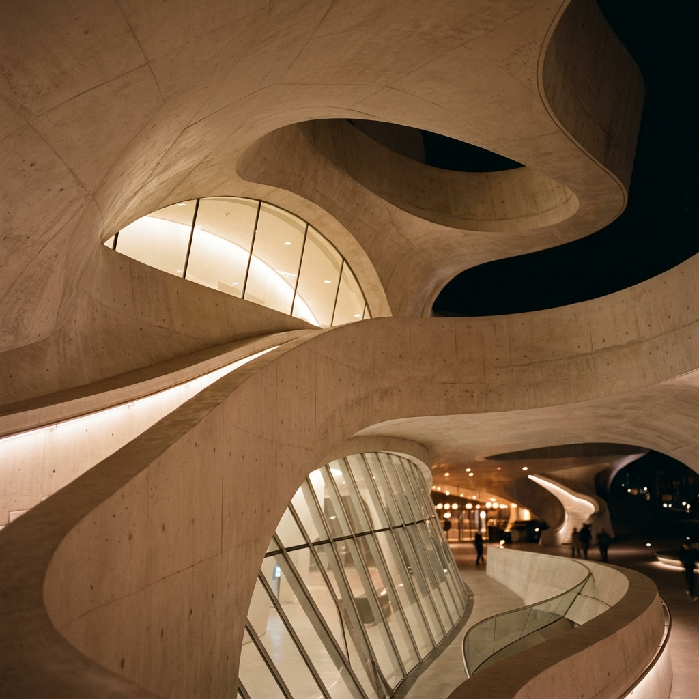
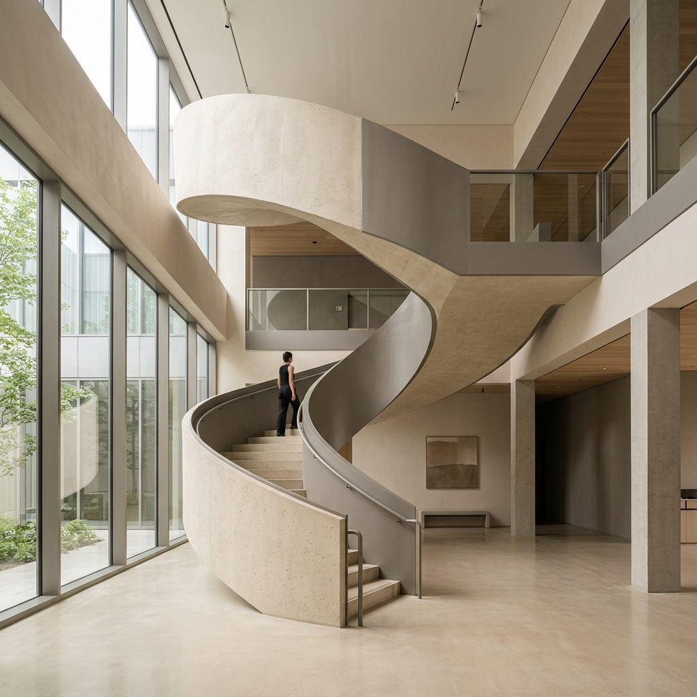

Architect
A passionate architect focused on minimalist, functional, and aesthetically pleasing spaces that blend natural elements with modern geometric forms and subtle, artistic nude palettes.
Designing modern residential and commercial spaces with a focus on nude color palettes, sustainable materials, and brutalist-inspired concrete textures.
Advanced studies in spatial design, urban planning, and conceptual visualization techniques.
Minimalist residential villa with expansive glass facades and seamless indoor-outdoor transition, utilizing warm beige tones and natural stone.
→

Modern interior space featuring dramatic sweeping concrete staircases and soft natural lighting to create a tranquil environment.
→Exploring the intersection of brutalist materials and warm nude color schemes to create an inviting yet striking atmosphere. The continuous flow of space is emphasized by the monumental central staircase.